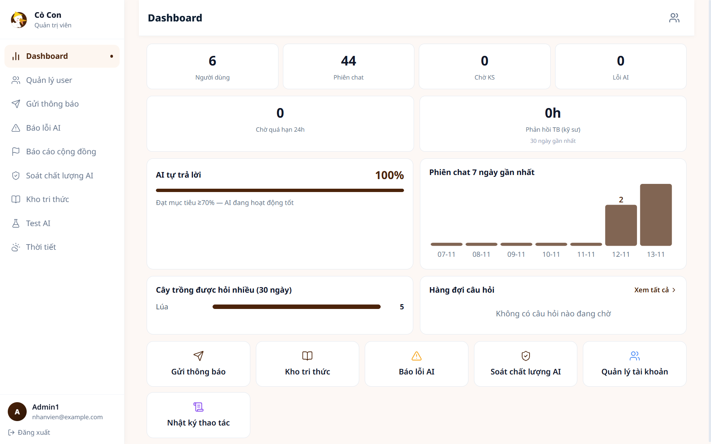
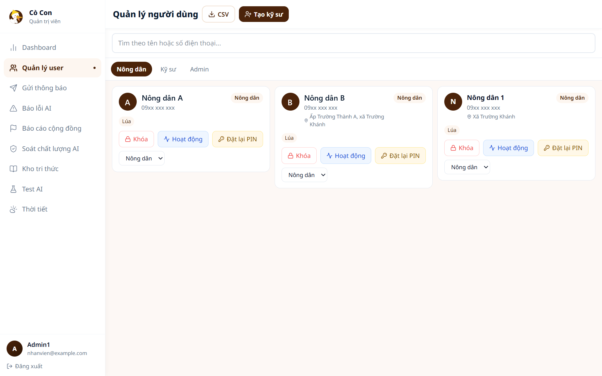

Hướng dẫn dùng app Cò Con — DÀNH CHO QUẢN TRỊ VIÊN (ADMIN)
Admin quản lý toàn hệ thống: tài khoản, thông báo, theo dõi hoạt động, chất lượng AI. Giao diện dùng tốt nhất trên máy tính (thanh menu bên trái).
Mục lục
- Đăng nhập
- Dashboard — Tổng quan
- Quản lý người dùng
- Gửi thông báo
- Các mục giám sát khác
- Chuẩn bị cho buổi tập huấn
- Hỏi đáp nhanh (FAQ)
1. Đăng nhập
- Giống kỹ sư: chọn "Kỹ sư / Admin" → đăng nhập bằng email + mật khẩu.
- Admin vào thẳng Dashboard.
- Menu admin: Dashboard · Quản lý user · Gửi thông báo · Báo lỗi AI · Báo cáo cộng đồng · Soát chất lượng AI · Kho tri thức · Test AI · Thời tiết. Mở Nhật ký thao tác từ Dashboard.

2. Dashboard — Tổng quan
Xem nhanh sức khỏe hệ thống:
- Người dùng, Phiên chat, Chờ KS (câu đang chờ kỹ sư), Lỗi AI.
- Chờ quá hạn 24h và thời gian phản hồi trung bình của kỹ sư.
- AI tự trả lời (%) — mục tiêu ≥ 70%. Thấp hơn = cần upload thêm tài liệu RAG.
- Biểu đồ phiên chat 7 ngày, cây trồng được hỏi nhiều nhất.
- AI trả lời yếu gần đây → gợi ý cần bổ sung tài liệu.
- Khu Hàng đợi ngay trên dashboard (nhận & trả lời câu luôn nếu cần).
3. Quản lý người dùng
Vào Quản lý user. 3 tab: Nông dân / Kỹ sư / Admin. Có ô tìm kiếm theo tên/SĐT.
Tab Kỹ sư hiện số đang chờ duyệt trong ngoặc (vd "Kỹ sư (2)") khi có người mới đăng ký.
Việc thường làm:
- Tạo tài khoản kỹ sư/admin: bấm "Tạo kỹ sư" → chọn vai trò (Kỹ sư / Quản trị viên) → nhập họ tên (tuỳ chọn), email + mật khẩu (≥ 8 ký tự, bắt buộc) → Tạo. Tài khoản tạo kiểu này dùng được ngay.
- Phê duyệt kỹ sư: nếu danh sách có tài khoản kỹ sư đang chờ duyệt, bấm "Phê duyệt kỹ sư". Màn hình đăng nhập hiện không hỗ trợ nhân sự tự đăng ký; admin tạo tài khoản mới.
- Khóa / Mở khóa tài khoản (thẻ bị khóa hiện mờ). Khóa = người đó không đăng nhập được nữa.
- Đổi vai trò (Nông dân ↔ Kỹ sư ↔ Admin) qua ô chọn — có hỏi xác nhận.
- Đặt lại PIN cho nông dân (chỉ tài khoản nông dân có SĐT): bấm "Đặt lại PIN" → xác nhận → hiện mã PIN mới → bấm vào ô để copy → đọc/gửi cho nông dân. PIN cũ hết hiệu lực ngay; nông dân tự đổi lại trong Hồ sơ.
- Xem hoạt động một nông dân: bấm "Hoạt động" → xem tổng số phiên + lịch sử câu hỏi gần đây (tiện hỗ trợ qua điện thoại).
- Tìm kiếm theo tên/SĐT; Xuất CSV danh sách theo tab đang xem (nút CSV).
Lưu ý: với chính tài khoản của mình, bạn không thấy nút Khóa/Đổi vai trò — chỉ hiện dòng "Tài khoản của bạn — không thể tự khóa hoặc đổi vai trò". Đây là cơ chế chống tự khóa nhầm.

4. Gửi thông báo
Vào Gửi thông báo / Soạn thông báo. Trên cùng có Preview cập nhật trực tiếp khi bạn gõ.
- Chọn loại:
- Cảnh báo dịch bệnh (ưu tiên cao, hiển thị nổi bật)
- Khuyến mãi vật tư (phân bón, thuốc BVTV giảm giá)
- Thời tiết nông vụ
- Nhập Tiêu đề (tối đa 100 ký tự) + Nội dung chi tiết. Cả hai bắt buộc.
- Ảnh minh hoạ (không bắt buộc): "Tải ảnh từ máy" hoặc dán link ảnh. Có thể Gỡ ảnh để đổi.
- Gửi cho nông dân trồng (lọc theo cây):
- Không chọn cây = gửi cho tất cả nông dân.
- Chọn 1+ cây = nhắm theo cây trồng của người nhận (vd cảnh báo sâu lúa → chỉ chọn Lúa). Dòng dưới xác nhận "→ Đang gửi cho: ...". Thiết bị chưa chọn cây vẫn có thể nhận tin; bộ lọc cây riêng của thiết bị được ưu tiên nếu có.
- Thời gian gửi:
- Để trống = Gửi ngay.
- Chọn ngày giờ (không cho chọn quá khứ) = Lên lịch gửi.
- Bấm Gửi ngay / Lên lịch gửi:
- Gửi ngay → màn báo "Gửi thành công!" kèm đã gửi X / Y thiết bị (và số lỗi nếu có).
- Lên lịch → "Đã lên lịch gửi!".
Quản lý thông báo đã lên lịch: mục "Đã lên lịch" liệt kê các tin chờ gửi (kèm giờ) — bấm Hủy để gỡ trước khi gửi.
Gợi ý cảnh báo thời tiết tự động: hệ thống tự phát hiện thời tiết xấu từ dự báo và tạo bản nháp ở mục "🌦️ Gợi ý cảnh báo thời tiết". Admin xem rồi bấm "Gửi cho nông dân" hoặc "Bỏ".
Lưu ý: nông dân chỉ nhận nếu họ bật thông báo + cho phép quyền trình duyệt; tin đẩy còn lọc theo loại tin, cây và khung giờ không làm phiền của từng thiết bị. Thiết bị trong giờ yên tĩnh bị bỏ qua khi gửi, không tự gửi lại sau đó; tin vẫn có thể xuất hiện trong danh sách. X/Y là số gửi thành công trên số thiết bị đủ điều kiện, không phải trên tổng số nông dân.
5. Các mục giám sát khác
5.1. Báo lỗi AI
Các câu nông dân bấm "Báo lỗi", gom theo lý do: Sai thông tin / Không liên quan / Khó hiểu (kèm ghi chú của nông dân nếu có).
- Bấm "Soạn câu trả lời đúng" → nhập Câu hỏi + Câu trả lời đúng → lưu thành QA biên soạn + embed → AI trả tốt hơn lần sau.
- Hoặc "Đánh dấu đã xử lý" để dọn khỏi danh sách.
5.2. Báo cáo cộng đồng
Bài/bình luận bị nông dân báo cáo. Mỗi mục hiện lý do báo cáo (chip):
- Xem → mở bài để đọc nguyên văn.
- Xóa nội dung → gỡ bài/bình luận vi phạm (có xác nhận).
- Bỏ qua → đánh dấu đã xử lý, giữ nội dung.
5.3. Soát chất lượng AI
Giống bên kỹ sư: lọc Tất cả / 👍 Được khen / Tin cậy thấp (<50%) / Trung bình (50–70%); biến câu sai hoặc câu được khen thành QA chuẩn (xem hướng dẫn kỹ sư, mục Soát chất lượng AI).
5.4. Nhật ký thao tác (Audit log)
Lưu lại các thao tác quản trị quan trọng: Khóa / Mở khóa tài khoản · Đổi vai trò · Đặt lại PIN · Tạo nhân sự · Cập nhật. Dùng để truy vết ai làm gì.
5.5. Kho tri thức & Test AI
Admin dùng được như kỹ sư — xem hướng dẫn kỹ sư.
6. Chuẩn bị cho buổi tập huấn
Việc admin/trainer nên làm trước buổi tập huấn tại xã:
- [ ] Mỗi nông dân: 1 điện thoại có mạng (4G/wifi), có số điện thoại riêng.
- [ ] Chuẩn bị sẵn vài câu hỏi mẫu để demo (vd: "Lúa bị vàng lá là bệnh gì?").
- [ ] Tạo sẵn tài khoản cho các kỹ sư (email + mật khẩu) trước buổi học.
- [ ] Hướng dẫn cách mở app + cài ra màn hình chính (Chrome: "Cài đặt và tạo lối tắt").
- [ ] Hướng dẫn bật thông báo trong Cài đặt thông báo và cấp quyền trình duyệt; cấp quyền micro khi sử dụng giọng nói.
- [ ] Với bà con lớn tuổi: chỉ cách chỉnh Cỡ chữ hiển thị → Lớn / Rất lớn.
7. Hỏi đáp nhanh (FAQ)
| Tình huống | Cách xử lý |
|---|
| Kỹ sư chưa có tài khoản hoặc chưa đăng nhập được | Tạo tài khoản trong Quản lý user; nếu tài khoản có trạng thái chờ, Phê duyệt kỹ sư |
| Nông dân quên PIN | Quản lý user → Đặt lại PIN → copy PIN mới đọc cho họ |
| AI tự trả lời (%) thấp | Bổ sung tài liệu vào Kho tri thức; biến câu hay thành QA ở Soát chất lượng AI |
| Nhiều câu chờ quá hạn 24h | Nhắc kỹ sư; admin tự nhận & trả lời từ Dashboard |
| Bài cộng đồng bị báo cáo | Báo cáo cộng đồng → Xem → Xóa nội dung hoặc Bỏ qua |
| Gửi tin "X/Y thiết bị" nhỏ | Bình thường — chỉ tính máy đã bật thông báo, ngoài giờ "không làm phiền" |
| Lỡ lên lịch nhầm | Mục Đã lên lịch → Hủy trước giờ gửi |
| Không tự khóa được mình | Đúng thiết kế — nhờ admin khác thao tác nếu cần |
| AI hay báo 429/quá tải | Chờ và thử lại; kiểm tra giới hạn và cấu hình dịch vụ AI với người vận hành |
Tóm tắt: Theo dõi Dashboard → quản lý tài khoản → gửi thông báo → giám sát chất lượng AI & cộng đồng.